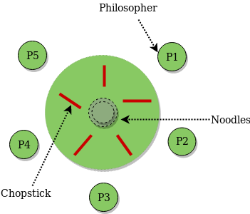
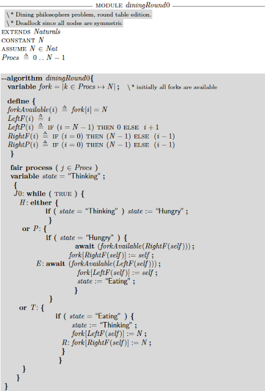

SMT and Model Checkers¶
The next steps up for tree searchers and SAT solvers:
- State more complex than just truth tables
- Searching a graph instead of a tree
- Temporal logic
Technical Lingo¶
- Satisfiability Modulo Theories (SMT) Problem
- Decision problem for logical first order formulas with respect to combinations of background theories such as: arithmetic, bit-vectors, arrays, and uninterpreted functions.
Dining Philosophers¶
Core model:
State of one chopstick ∈ { Unused, LeftPhilosopher, RightPhilsopher }
State of all chopsticks ∈ {'UUUUU', 'UUUUL', 'UUURL', 'RUURL', ... }
Number of possible states: 3⁵ = 243
Implied states for a philosopher:
0 chopsticks held ⟶ Thinking
1 chopsticks held ⟶ Trying to eat
2 chopsticks held ⟶ Eating
Unconstrained chopstick state transitions:
Unused ⟶ LeftPhilosopher
Unused ⟶ RightPhilsopher
LeftPhilosopher ⟶ Unused
RightPhilsopher ⟶ Unused
Constrain the model with philosopher strategies:
Strategy D:
0 chopsticks held ⟶ AcquireLeft
1 chopsticks held ⟶ AcquireRight
2 chopsticks held ⟶ ReleaseBoth
Strategy S:
Philosopher zero always holds left chopstick
Strategy H:
0 chopsticks held ∧ no request ⟶ Enqueue an eat request
0 chopsticks held ∧ requested but not available ⟶ Wait
0 chopsticks held ∧ requested available ⟶ AcquireLeft
1 chopsticks held ⟶ AcquireRight
2 chopsticks held ⟶ ReleaseBoth
What the Solver Does¶
The transitions generate a graph.
The solver traverses the graph to see if: 1) every state has an exit state – deadlocks 2) every path loop has every philosopher eating – no one starves
Unlike the puzzle solvers, we need “temporal operators” that check the relationship between a succession of states:
Predicate P is always true.
A chopstick is held by 0 or 1 philosophers
Predicate P is eventually true
A philosopher with a left chopstick eventually gets a right one
Predicate P is always eventually true
After eating, a philosopher is always able to eat again
For example:
UUUUU -> ... -> UURLU -> ULUUU -> ... -> UURLU -> ...
^ ^
| |
P₃ eats P₃ thinks P₃ eats
TLA⁺ model checker¶
The TLA⁺ model checker generate the contrained graph, follows all paths, and checks all of the temporal invariants.
Here’s PlusCal model for the dining philosophers problem.
For a nice write-up on using TLA⁺ for the dining philosophers problem see the blog post by Murat Demirbas at http://muratbuffalo.blogspot.com/2016/10/modeling-dining-philosophers-algorithm.html
Other Tools¶
The Z3Py package lets you drive Microsoft’s Z3 solver, a production ready powerful SMT solver.
To get started, see this tutorial: https://ericpony.github.io/z3py-tutorial/guide-examples.htm